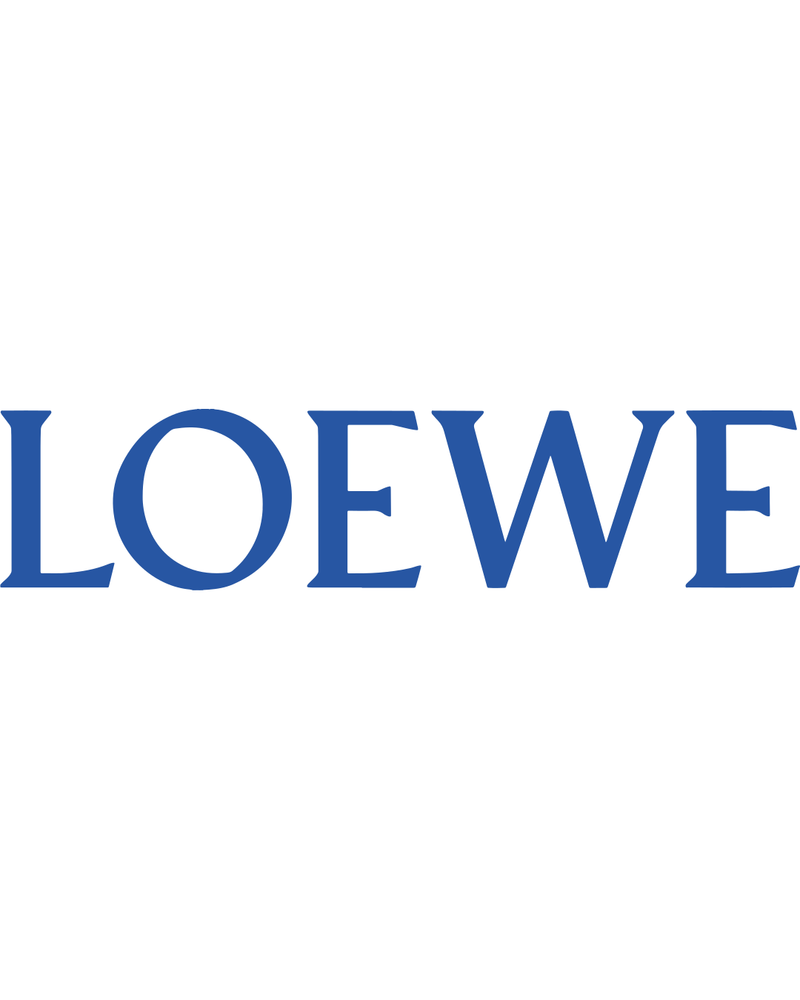
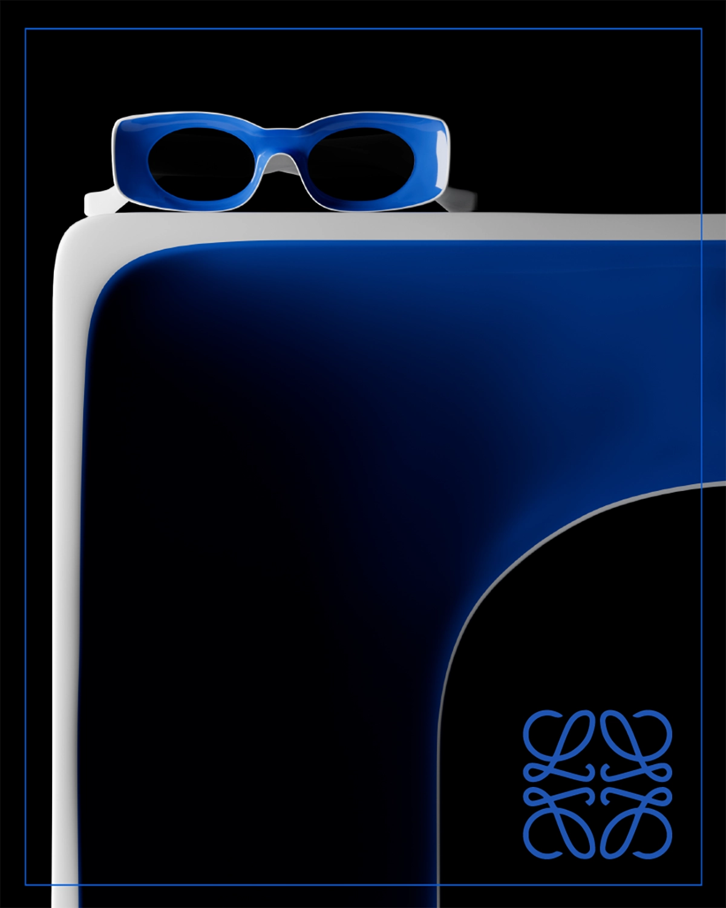
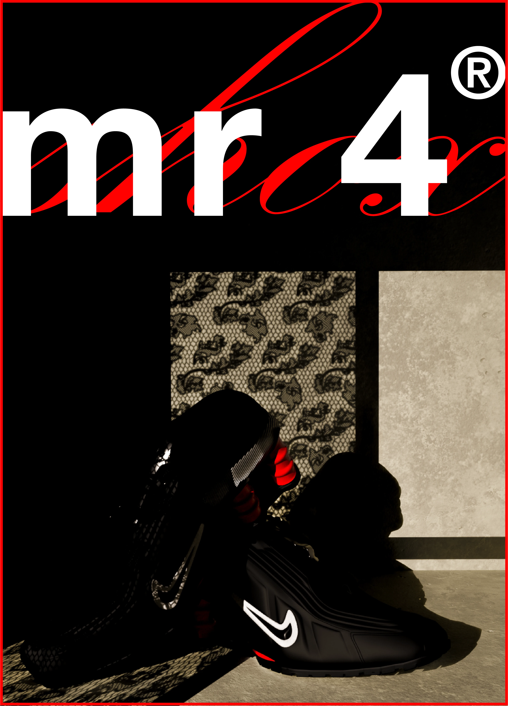

info
dm
stuff
(scroll down)
"Vermut de elaboración tradicional
con regusto a moderno".
3D
Art Direction
Typography
"¿Cuánto importa la naturaleza en
un mundo hiperartificial y posmoderno?".
Photography
Art Direction
Typography
Una necesidad
que se cumple,
un poco tarde.
Photography
Editorial & Concept
not really finished yet...
Unas gafas que
se merecían ser más.

3D
Art Direction
Photography
Las zapas más duras
de los últimos 20 años.
3D
Art Direction
Typography
Una geometría cálida.
3D
Art Direction
Editorial


CREDITS
TITLE
"Vermouth de elaboración tradicional con regusto a moderno." | Traditionally crafted vermouth with a modern twist.
SERVICES
Art Direction, Campaing, 3D Rendering, Branding
CLIENT
ESTIO vermouth.
YEAR
2024.
LOCATION
Madrid, ESP.
DESCRIPTION
ESTÍO nace de la idea de aportar y mejorar la experiencia del momento de disfrutar del vermut de forma social. Se trata más de la experiencia y la percepción en sí que del propio sabor del vermut, pretendiendo ofrecer el momento de disfrutar de esta bebida como algo moderno, fresco y visualmente enriquecedor. Que de la misma manera que acompaña el propio vaso de vermut, con sus sofisticadas pieles de naranja, sus olivas atravesadas y sus hielos llenos de glamour, la propia lata sirva como un más en esa mesa de aperitivo donde, en una tradición más bien antigua, invite a pensar en los cambios de época y en las nuevas maneras de adaptar estas viejas tradiciones.
El nuevo formato, además de mostrar un nuevo elemento en estos aperitivos, ofrece la posibilidad de tomar el vermut en más sitios y de forma más móvil y compacta proponiendo nuevas maneras de consumir la bebida.
-
ESTÍO was born from the idea of contributing and improving the experience of the moment of enjoying vermouth in a social way. It is more about the experience and the perception itself than the taste of vermouth itself, aiming to offer the moment of enjoying this drink as something modern, fresh and visually enhancing. In the same way that it accompanies the glass of vermouth itself, with its sophisticated orange peels, its crossed olives and its glamorous ice, the can itself serves as an extra at the aperitif table where, in a rather old tradition, it invites us to think about the changing times and the new ways of adapting these old traditions.
The new format, besides showing a new element in these aperitifs, offers the possibility of drinking vermouth in more places and in a more mobile and compact way, proposing new ways of consuming the drink.


CREDITS
TITLE
"Artificis Naturals."
SERVICES
Art Direction, Campaing, Photography, Branding
CLIENT
Disseny Hub Barcelona and Museu de Ciènces Naturals de Barcelona.
YEAR
2025.
LOCATION
Barcelona, ESP.
DESCRIPTION
Artificis Naturals trata de cuestionar acerca del valor de la naturaleza en un mundo postmoderno y digitalizado mediante imágenes que capturan esta naturaleza aplicando una luz artificial, generando un diálogo, tanto visual como conceptual, sobre nuestra relación con el entorno en la era de la hiperconectividad.
La propuesta se basa en la premisa del enfretamiento entre lo natural y lo artificial, así como en su mezcla dentro del diseño.
Para la producción de la campaña se realizó una serie de fotografías nocturnas de diferentes tipos de flores, en la que se utilizó baja exposición y flash, además de un proceso posterior de edición intensa, para crear contrastes fuertes e inusuales, como principal protagonista de las gráficas.
-
Artificis Naturals seeks to question the value of nature in a postmodern and digitalized world through images that capture this nature by applying an artificial light, generating a dialogue, both visual and conceptual, about our relationship with the environment in the era of hyperconnectivity.
The proposal is based on the premise of the encounter between the natural and the artificial, as well as their blending within design.
For the production of the campaign, a series of night photographs of different types of flowers were taken, in which low exposure and flash were used, in addition to a subsequent process of intense editing, to create strong and unusual contrasts, as the main protagonist of the graphics.
El mundo de la noche y la fiesta siempre ha dado lugar a la creación y aparición de emociones y sensaciones. Las
reuniones de personas, las amistades momentáneas, las situaciones reveladoras, fugacidad, movimiento, música,
alcohol, tocar fondo, estar en lo más alto. Todo esto junto y deformado en una especie de pinceladas románticas que
plasman un momento pero no lo observan, nos muestran, con humilde poesía, la realidad de los momentos de la fiesta
donde nada es claro y todo se siente más. Este proyecto fotográfico busca revelar esa realidad deformada que se vive
durante las noches, mirar directamente a esos recuerdos borrosos que se quedan en nuestras mentes como pequeñas
muestras de una realidad que se siente incierta.
The world of the night and the party has always given rise to the creation and appearance of emotions and sensations. The
gatherings of people, momentary friendships, revealing situations, transience, movement, music,
alcohol, bottoming out, being on top. All this together and deformed in a kind of romantic brushstrokes that capture a moment but do not observe it.
capture a moment but do not observe it, they show us, with humble poetry, the reality of the moments of the party where nothing is clear and everything is
where nothing is clear and everything is felt more. This photographic project seeks to reveal that distorted reality that is lived during the nights, to look directly to those
during the nights, to look directly at those blurred memories that stay in our minds as small samples of a reality that feels
samples of a reality that feels uncertain.


CREDITS
TITLE
Proyecto Desf.
SERVICES
Photography, Editorial
CLIENT
Myself.
YEAR
2023.
LOCATION
Madrid, ESP.
DESCRIPTION
Es un trabajo fotográfico personal, hecho para mi y para mi yo de hace unos años a modo de deuda con una necesidad que
surgió en mi hace ya varios años, pero que no me había atrevido a realizar seriamente hasta 2023.
Ahora ya se
trata de una historia sin cerrar que no se si encontrará su final algún día...
-
It is a personal photographic work, made for me and for my self of a few years ago as a debt with a need that arose in me several years ago, but that I had not dared to do seriously until 2023.
Now it is an unfinished story that I don't know if it will find its end someday...

CREDITS
TITLE
LOEWE Paula´s Ibiza Sunglasses. 2021.
SERVICES
Art Direction, Campaing, 3D Rendering
CLIENT
LOEWE (fake).
YEAR
2024.
LOCATION
Madrid, ESP.
DESCRIPTION
LOEWE es históricamente una marca que visualmente, tanto en sus campañas, como en sus prendas, ha tenido un carácter muy relacionado con el arte. Ya sea por los acabados, por el tratamiento de los textiles, por las campañas o por las pasarelas. Incluso en los últimos años, han tenido cierto punto surrealista con piezas seleccionadas como el bolso paloma o las prendas pixeladas.
De esta manera, se me ocurrió que una buena manera de promocionar algo que puede acabar siendo tremendamente icónico, y que en este caso lo fueron en el verano de 2021. Presentar este artículo con un carácter casi escultórico. Hacer incapié en las formas que definen las gafas, situarlo en un espacio elegante y que las haga elevar a un estado casi sobervio donde solo estén estas y el vacío.

CREDITS
TITLE
Nike shox mr4.
SERVICES
Art Direction, Campaing, 3D Rendering, Branding
CLIENT
Nike, MartineRose (fake).
YEAR
2024.
LOCATION
Madrid, ESP.
DESCRIPTION
Se trata de un trabajo fotográfico de contrastes donde poder tratar la complejidad y modernindad tanto del zapato en si,
como del concepto que representa. El equipo de Martine Rose creó un zapato para luchar contra el sesgo de género en el
deporte, para alzar a las mujeres en el fútbol, y para elevar un zapato de la "calle" al status de algo más elevado.
De esta manera, decidí crear mi propia reinterpretación de la campaña que se realizó para promocionar este
zapato. Ya que, aunque considero muy acertado el mensaje y tipo de narrativa que se escogió, creo que termina pecando de
cierta tosquedad y simpleza visual al escoger una camapaña tan frontal, tratándose de una reinterpretación tan compleja.
Por esta razón, decidí crear un juego de contrastes entre un pasado, situado en el imaginario de todo el mundo, y
relacionado con una mentalidad más cerrada, y la representación del avance y el progeso, del presente y el futuro, como
lo es este zapato.
"boro", a traditional patchwork style, grew out of necessity rather than aesthetics. Meaning "tattered", the boro style was favored by rural Japanese in the 19th and early 20th centuries.
Cotton was not common in Japan until well into the 20th century, so when a kimono or futon sleeping cover became scarce in a given area, the women of the family would patch it with a small piece of patchwork fabric using sashiko stitches.
CREDITS
TITLE
Boro.
SERVICES
Art Direction, Editorial, 3D Rendering
CLIENT
YOROKOBU Magazine.
YEAR
2023.
LOCATION
Madrid, ESP.
DESCRIPTION
Taking into account the Japanese character of the magazine and the theme of the name, it was decided that visually the casual style of the textile patches were perfect to convey peace and tranquility.
While visually conveying that calmness, they invite the consumer to learn about this ancient Japanese tradition that, hopefully, will also inspire with that great story of perseverance and creativity.
(←)
(→)
(scroll down)